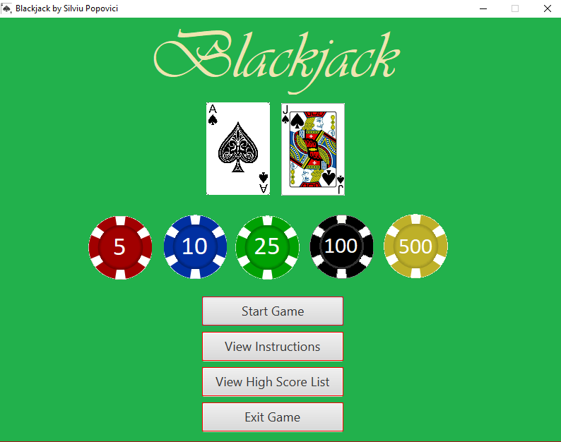

-My Projects-
PizzaBuilder
A pizza building app with an order form that allows you to select options like pizza size and toppings and watch the pizza and price change in real time! Made with javascript, HTML and CSS without any libraries. CLICK HERE to play with it in your browser!
Quickblog

A blogging app that lets you quickly make an account and start blogging! Quickblog is a blogging app written in Node.js with the Express framework and uses a MongoDB database to store user data. Users can create a new account and start blogging within seconds. Users can create, edit, and delete blog posts as well as comment on blog posts by making use of RESTful routing principles. It isn't currently live but you can CLICK HERE to see the code on github!
Blackjack
This is a classic Blackjack game made in Java with the JavaFX framework, complete with an embedded SQLite database to keep track of high scores. Made entirely from scratch. CLICK HERE to see the code on github!
BrickBreaker

This game is a clone of Breakout, a game where you control a paddle and a ball bounces off of it and destroys bricks. This was done in Javascript/HTML5 using a Canvas and it will run in any modern browser! Made by following a simple HTML game tutorial and then adding a bunch of extras like the starfield animation, pausing functionality, and random colors for the bricks. CLICK HERE to play the game right in your browser!
Responsive Image Gallery
This is an example of a responsive image gallery with columns and a navbar that adapt to the screen size to look good on all screen sizes. The gallery also has a modal functionality where you can click an image and a modal will pop up with a larger version of the image. Made using HTML, CSS, and Javascript without any libraries or frameworks. Photo images are courtesy of unsplash.com (I'm not really a photographer). CLICK HERE to view the page right in your browser!
React To-Do List App

A responsive to-do list app made with React.js that allows the user to add, edit, and delete list items. This project taught me a lot about React.js and ES6. CLICK HERE to view the app right in your browser!
Insane Space Rescue

Aliens attacked and destroyed your ship and your fellow colonists are trapped in crates floating around in space! Rescue them by grabbing crates while destroying aliens and avoiding the alien mother ship's fire. This game is a space invaders type 2D space shooter which I created for a final project for a game development course. It's written in Python using the PyGame framework and it even has a 2 player mode! CLICK HERE to view the project on github!
Javascript Calculator

This is an online calculator app that can be used right in your browser, written in HTML5 and Javascript. In addition to the normal pocket calculator functions, it also has buttons for rounding the displayed number to the nearest whole number and for finding the Nth Fibonacci number as well as the Nth prime number. CLICK HERE to view the calculator in your browser!
Tic Tac Toe

This game is the classic Tic-Tac-Toe game written with HTML5/CSS/Javascript. If you mark three squares in a row with your letter, you win! You can play against the computer or in two player mode. Player 1 is always "X" by default and player 2 (or the computer) is "O". CLICK HERE to play the game right in your browser!